Identidade visual
Faísca
Uma marca de velas aromáticas com personalidade: cores quentes, formas orgânicas e uma estrela que acende cada peça.

- Marca
- Faísca
- Segmento
- Velas aromáticas
- Escopo
- Identidade visual
- Aplicações
- Embalagens, sacolas, cartões, papelaria, adesivos e Instagram
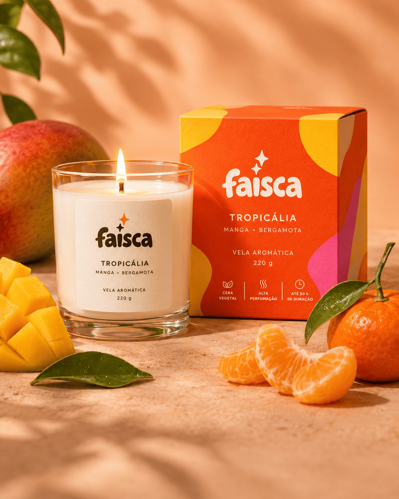
Conceito
Aromas que iluminam seus momentos.
A Faísca faz velas feitas para transformar pequenos instantes.
O nome vira linguagem: a estrela de quatro pontas acende o logotipo e se repete pelas peças, enquanto as cores quentes e as formas orgânicas dão à marca um tom alegre e próximo.
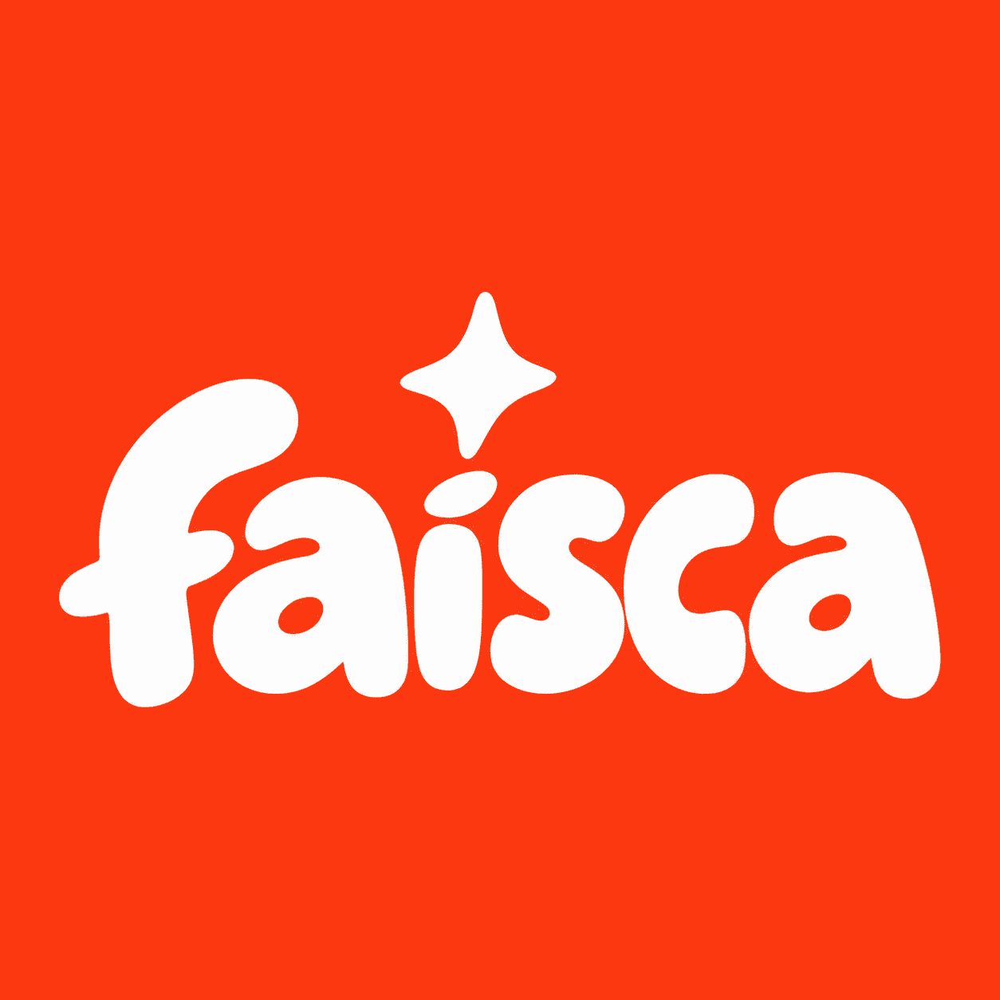
Logotipo
Redondo, cheio e aceso.
-
Caixa baixa
Letras minúsculas, cheias e de pontas arredondadas, com contraformas pequenas.
-
Pingo inclinado
O pingo do i é uma forma oval inclinada, que sugere o acento do nome.
-
Estrela de quatro pontas
Fica sobre o i. Os arquivos de logotipo e os cartões trazem uma estrela; sacolas, embalagens e papelaria, duas.
-
Versões de cor
Branco sobre laranja, rosa e amarelo-lima; laranja sobre branco; escuro sobre creme nos rótulos.
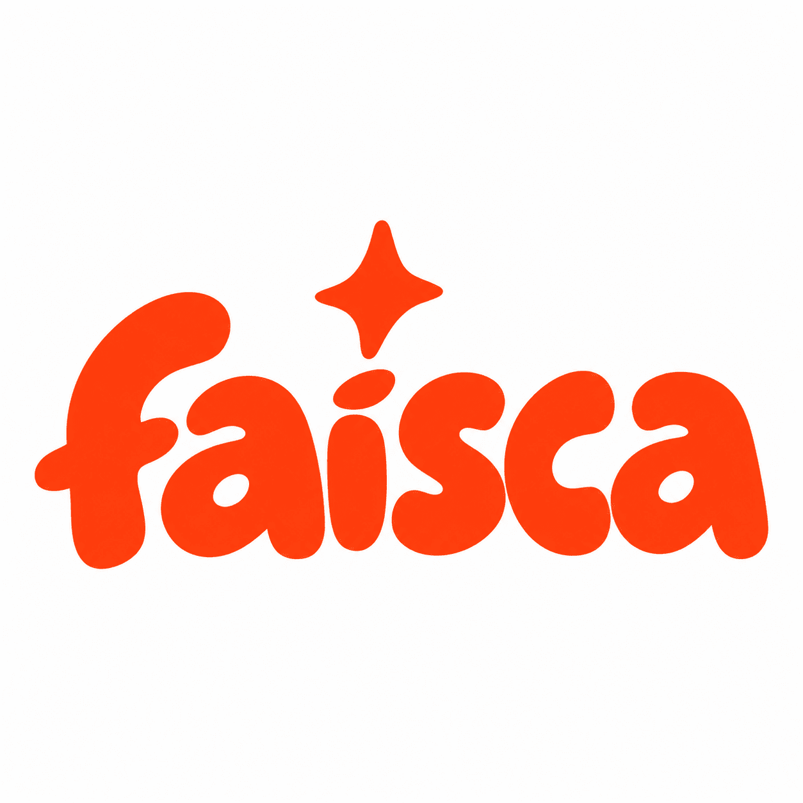
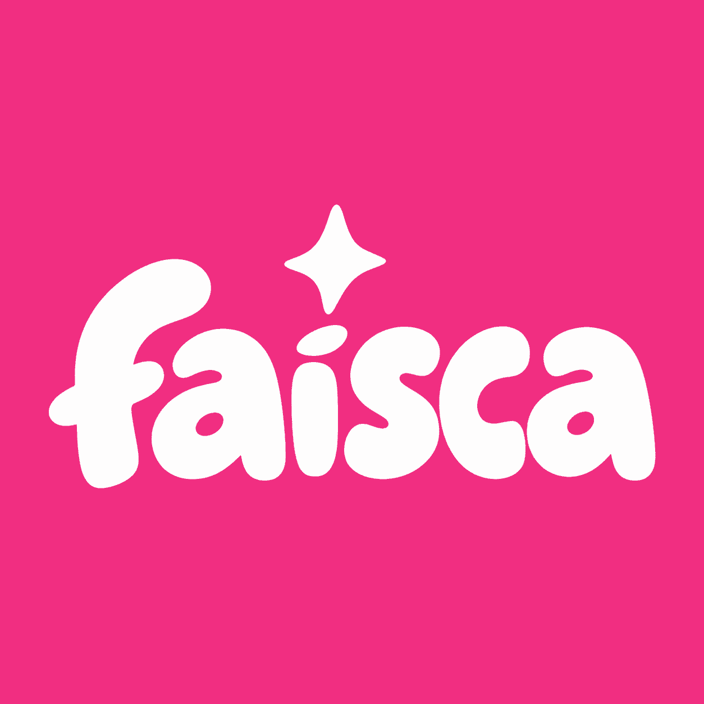
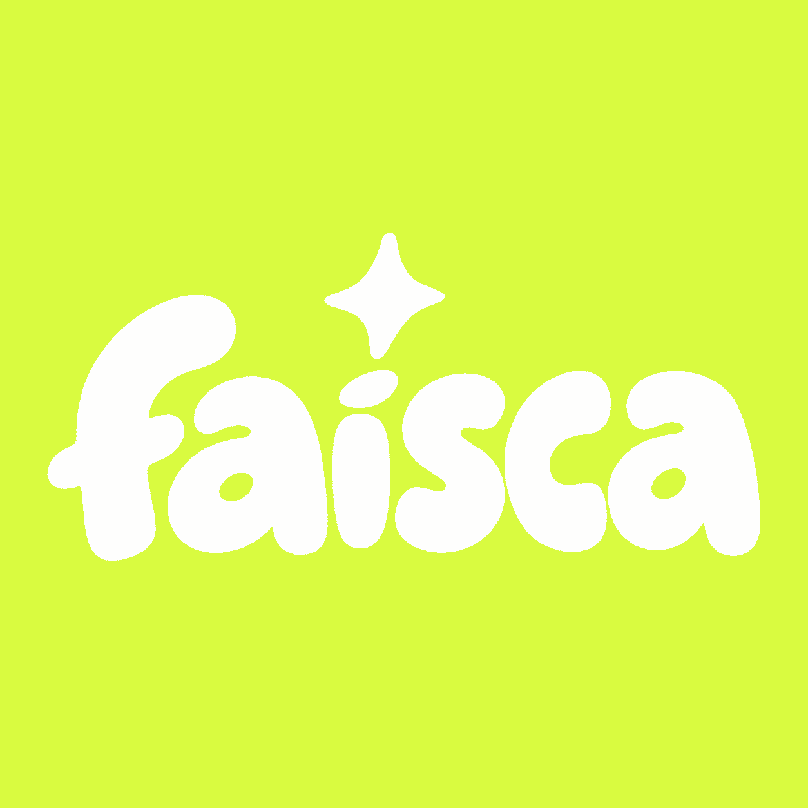
Paleta de cores
Quente do começo ao fim.
- Laranja#FB3810
- Rosa#F12E81
- Amarelo-lima#D9FB40
- Branco#FEFDFD
- Âmbar≈ #FCB018
- Creme≈ #F6DBC2
- Marrom≈ #6C3116
- Cereja≈ #D70337
Laranja, rosa, amarelo-lima e branco foram medidos nos arquivos de logotipo. Os códigos com ≈ são amostras de mockups fotografados e podem variar com a luz da cena.
Tipografia
Duas vozes, uma redonda e uma limpa.
Que bom ter você por aqui!
Tropicália
Manga • Bergamota
Seu pedido foi preparado com muito carinho.
As letras do logotipo não correspondem a nenhuma das fontes comparadas e são tratadas como lettering.
O material não inclui arquivos de fonte. Baloo 2 e Montserrat são as alternativas mais compatíveis, escolhidas por comparação visual com as peças, e não uma confirmação das fontes originais.
Elementos gráficos
Formas que escorrem, estrelas que brilham.
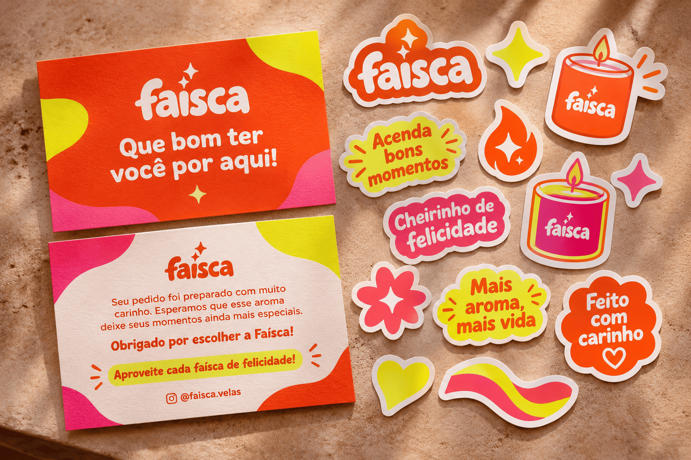
-
Formas orgânicas
Manchas de cor que invadem os cantos das peças e deixam o logotipo livre no centro.
-
Estrela
Sai do logotipo e vira elemento solto, adesivo e ícone.
-
Adesivos
Velas, chama, flor e coração recortados com borda branca.
-
Frases
Mensagens curtas e afetivas, cercadas por pequenos traços de brilho.
Aplicações
Cada aroma, sua cor.
A estrutura se mantém e a cor muda com a fragrância. A caixa carrega a personalidade do aroma; o rótulo fica limpo, sobre fundo creme.
- TropicáliaManga • Bergamota
- MoccaCafé • Baunilha
- SakuraCereja • Avelã
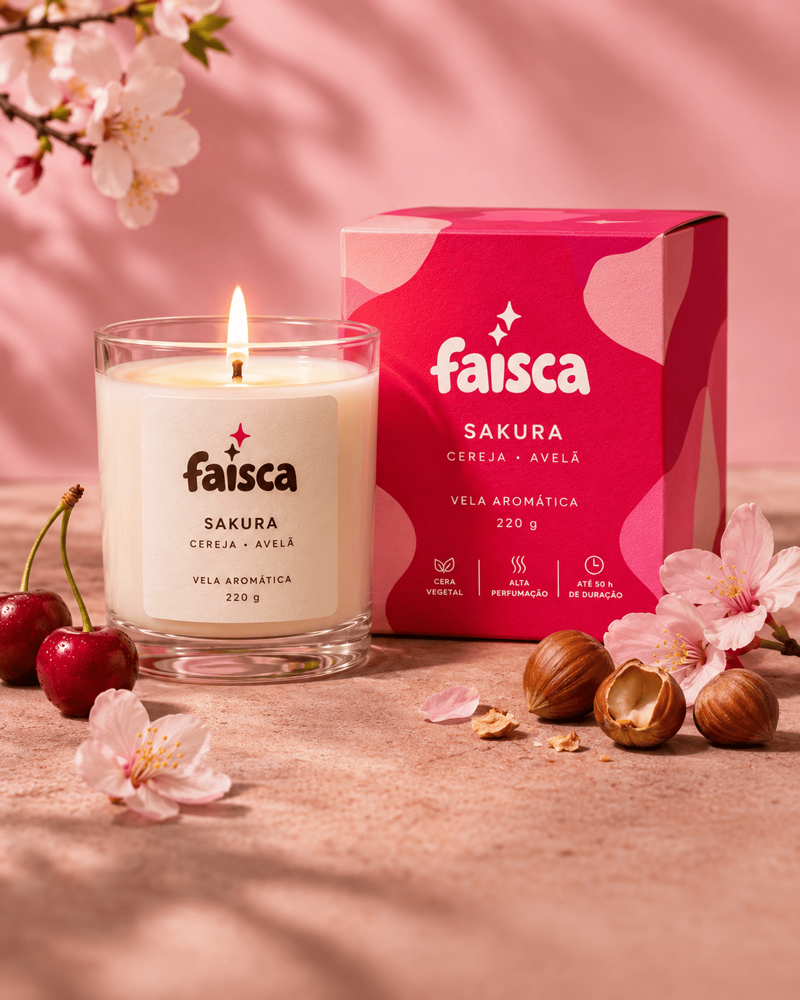
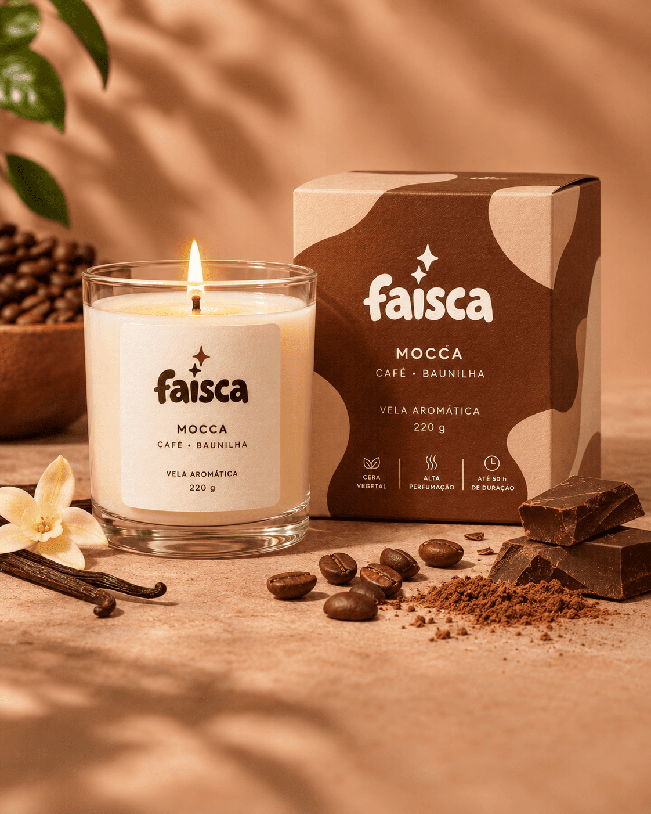
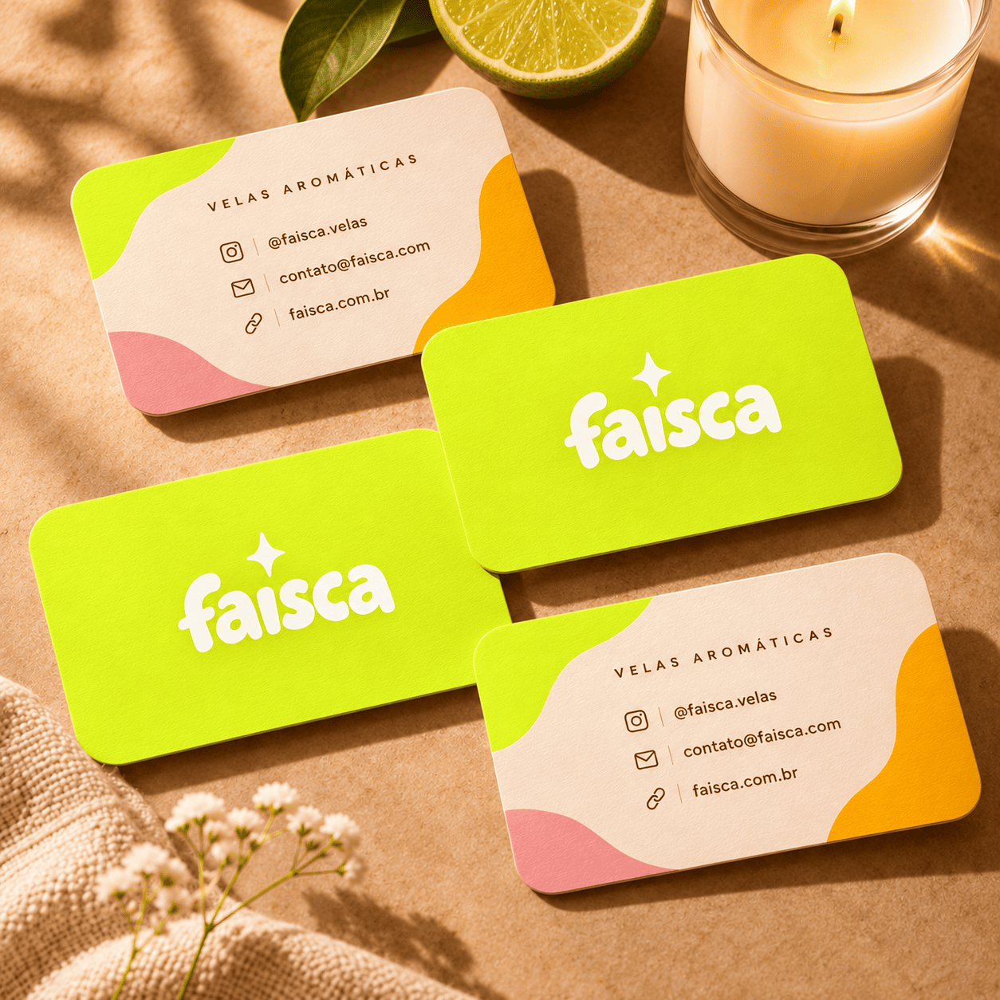
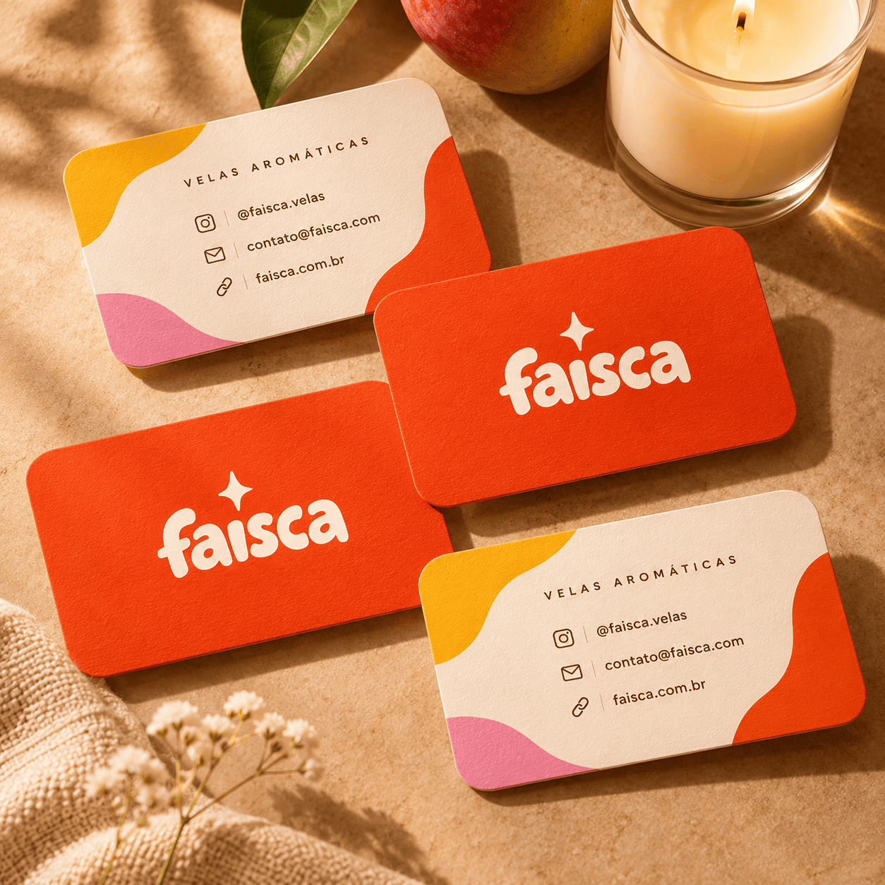
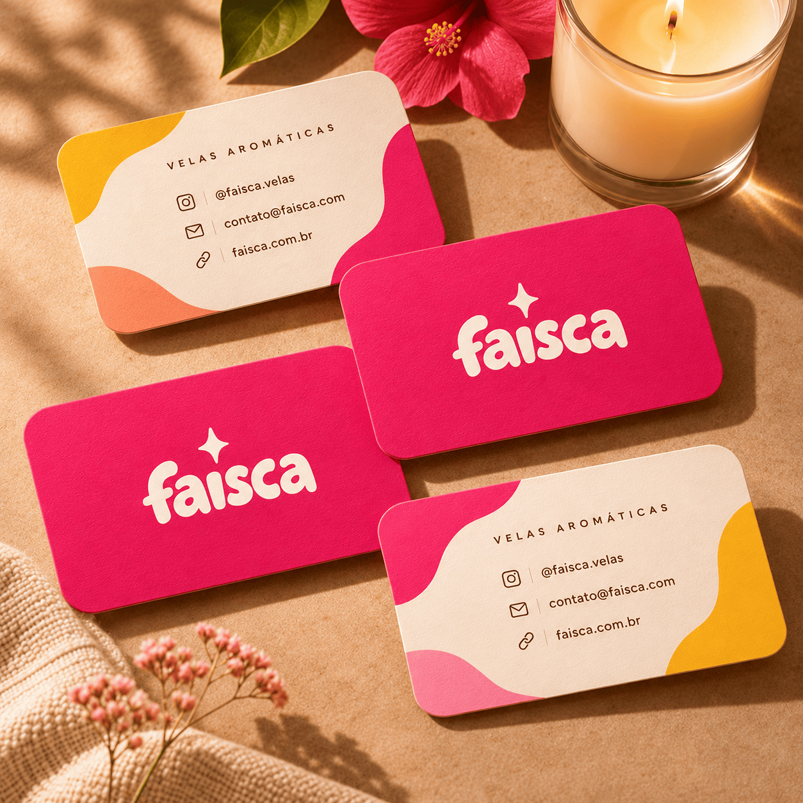
Muda a peça, continua Faísca.
Sua próxima grande ideia começa aqui.
Conta para a gente o que você quer tirar do papel. A primeira conversa serve justamente para isso.
Quero começar meu projeto